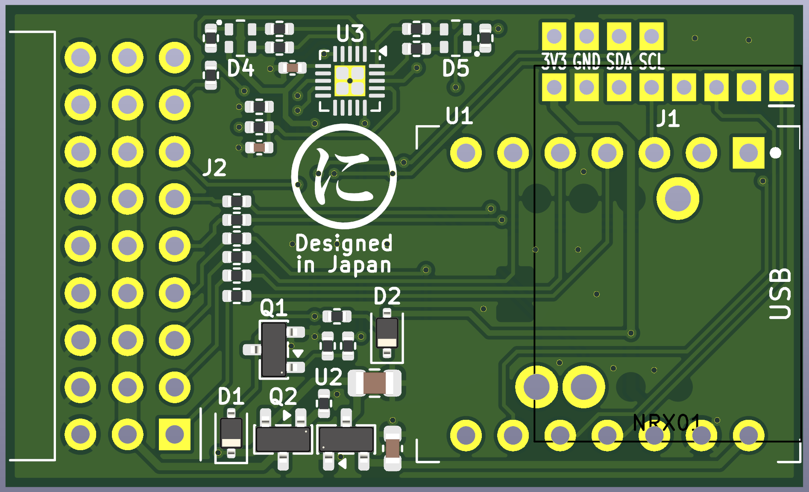
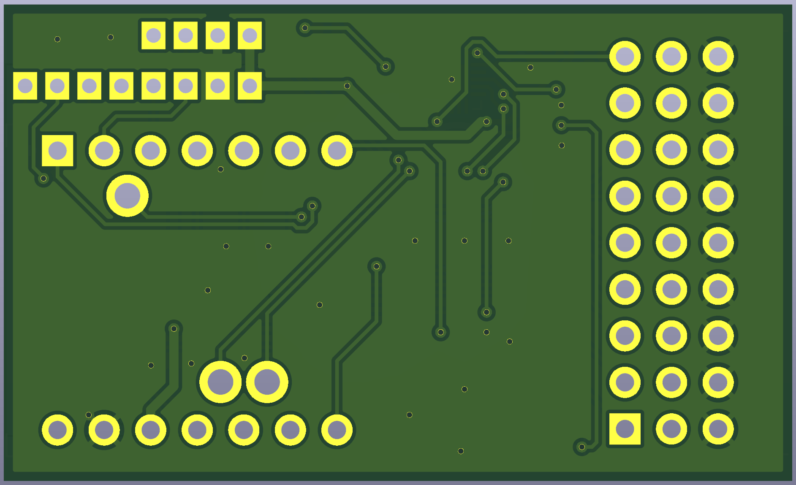
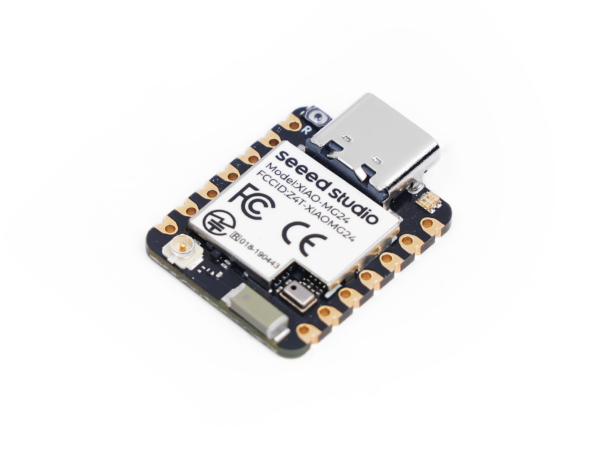

NRX02 XIAO MG24 Sense 全部入り受信機
受信モジュール NRX01（TI CC2500）と Seeed Studio XIAO MG24 Sense を 1 枚の基板にまとめた Futaba S-FHSS 受信機です。サーボ端子・電源回路・状態表示 LED まで載せています。
写真



特長
- 受信のみ：技適のない無線部（CC2500）からは電波を出さない設計です。
- S.BUS 16 ch（標準の反転信号）と PWM 6 ch を同時に出力します。
- サーボ端子：3 列 9 本のピンヘッダ（PWM 6 ch・S・X・書き込み用）を基板の端に並べ、サーボや ESC をそのまま挿せます。
- 電源：BEC（最大 8.4 V）から 5 V の LDO で XIAO に給電します。BEC の逆差しから守る回路付きです。USB からも動きます。
- ブラックボックス：XIAO の 4 MB フラッシュに 100 Hz で記録します。Betaflight / Rotorflight 互換の .bbl 形式で、受信値・受信強度・ジャイロ・加速度を残します。
- フライトシミュレーター：Bluetooth ゲームパッドとしてパソコンにつながり、S-FHSS の送信機でシミュレーターを操縦できます（追加ソフト不要）。
- I/O 拡張：CH32V003 を I/O 担当として載せ、RGB LED 2 個の状態表示、BEC 電圧の測定、ESC の設定・テレメトリー線（X 端子）を受け持たせる予定です。
- バインド：USB シリアルの
bindコマンド、または下の Receiver ソフトのボタンで行います。
今後の予定
XIAO MG24 Sense に載っている 6 軸センサー（ジャイロ・加速度）を使って、ジャイロ機能を順に追加する予定です。
- バギー：走行中の向きのぶれをステアリングで補正し、まっすぐ走りやすくします。
- 飛行機：エルロン・エレベーター・ラダーで機体の揺れを抑え、姿勢を安定させます。
- ヘリコプター（最終目標）：ヘリコプター用のジャイロ機能を目指します。
ジャイロ機能の PID などの設定は、Bluetooth でスマートフォン（Android・iPhone）からつないで調整できるようにする予定です。iPhone では Web Bluetooth に対応したブラウザ Bluefy を使います。
個人が趣味で開発している物なので、予定は変わることがあります。
主な仕様
| 対応方式 | Futaba S-FHSS（2.4 GHz、30 ch 周波数ホッピング） |
|---|---|
| 出力 | S.BUS 16 ch、PWM 6 ch |
| サーボ端子 | 3 列 × 9 本のライトアングル ピンヘッダ（2.54 mm）。1 列 = 信号・＋・－ CH1〜CH6（PWM）、S（S.BUS）、X（ESC の設定・テレメトリー線、予定）、書き込み用（CH32V003） |
| 電源 | BEC 最大 8.4 V（逆接続保護付き）→ 5 V LDO → XIAO。または USB |
| Bluetooth | ゲームパッド（8 軸＋8 ボタン）とコマンド。電源投入後 60 秒間だけ受付、接続がなければ停止 |
| 記録 | 100 Hz、4 MB で約 28 分 |
| 状態表示 | RGB LED × 2（CH32V003 で点灯） |
| 拡張端子 | I2C パッド（3V3・GND・SDA・SCL） |
| 基板 | 43 × 26 mm、2 層。NRX01 は XIAO の上に重ねて載せる |
| 原価（参考） | 1 枚 約 515 円（基板と部品。NRX01・XIAO MG24 Sense・送料は含まず） |
Receiver ソフト
ブラウザから XIAO MG24 に USB ケーブルか Bluetooth でつなぎ、ログの保存・バインド・情報表示・記録停止・全消去ができます。Chrome / Edge で使えます（Bluetooth は Android のスマートフォンからも可。iPhone / iPad は Bluefy ブラウザで開きます）。インストールは不要です。
状態
基板データは作成済みで、試作基板を準備中です。ファームウェアは NRX01 と XIAO MG24 Sense を配線でつないだ形で作成済み（実機での動作確認はまだ）で、NRX02 の S 端子の回路と CH32V003 に合わせた対応はこれからです。